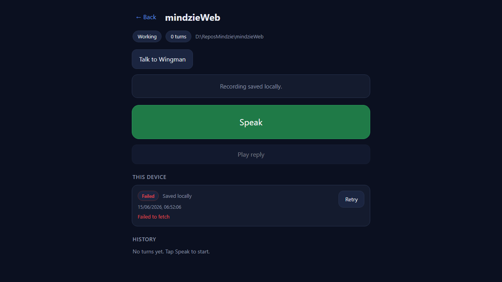
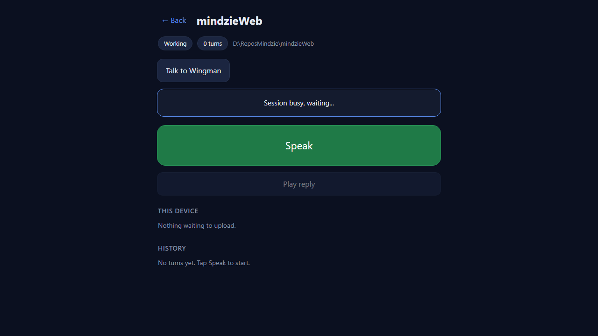

Developer Agent proof. PR base: feat/424-voice-wingman (stacking). Branch: feat/425-voice-offline1. Option A: NOT merged.
The /voice page no longer risks losing a recording on a flaky connection. The moment
a recording stops, the audio blob + turn metadata are written to IndexedDB before any
upload, and the page shows "Recording saved locally." Each saved turn carries a status badge
(Pending -> Uploading -> Uploaded, or Failed) and a Failed turn offers a Retry that re-runs the
resumable chunk upload from the stored blob. Pending/Failed turns survive a page reload because
they are read back from IndexedDB. Service Worker / Background Sync / auto-sync / 30-min stale
remain out of scope (issue #426).
src/CcDirector.Cockpit/wwwroot/pages/voice/db.js (new) - minimal IndexedDB
wrapper VoiceDb (open/put/get/getAll/remove/update) over one object store
outbox keyed by a local turn id. No fallbacks; failures surface explicitly.voice.js - on stop, the chunks are assembled into one Blob and persisted to
IndexedDB with status pending before any network call; the upload
(processOutboxItem) reads the blob back, marches pending -> uploading ->
uploaded (or failed + persisted error), reusing the stored
uploadId on retry (the server's 409-resume contract makes re-PUTs idempotent).
loadOutbox reads back this session's stored turns on open (reload persistence).
Reuses the existing api() / authHeaders() and the shipped resumable
chunk-upload flow.index.html - "This device" outbox section + loads db.js before
voice.js.voice.css - outbox row, status badge (pending=amber, uploading=blue,
uploaded=green, failed=red), and Retry button, all using the page's existing CSS tokens.The Gateway front door proxies /voice + /pages/voice/* to its Cockpit
and serves /sessions/* voice-turn endpoints itself. To run the updated
files against the real upload backend without disturbing the live Cockpit (rule 0), a
loopback test harness (voice-proof-proxy-425.py, in this folder) served the updated
voice files and forwarded all /sessions/* calls to the live Gateway on 7878.
voice-proof-drive-425.py drove Chromium (fake mic, real MediaRecorder):
record with the upload endpoints blocked, then reload, then Retry with the network restored.
| Criterion | Expected | Actual | Proof |
|---|---|---|---|
| Save to IndexedDB before upload; UI shows "saved locally" | Stage shows "Recording saved locally." and an outbox row appears the instant recording stops, before the upload | PASS - stage = "Recording saved locally."; outbox row present | 01 |
| Badge Pending -> Uploading -> Uploaded, or -> Failed | Per-turn status badge reflects each phase | PASS - Failed (01/02), Uploading (03a, blue), Uploaded then row cleared (04) | 01, 02, 03a, 04 |
| Failed turn shows Retry that re-runs the resumable upload from the stored blob | Retry re-registers/reuses uploadId, re-PUTs the stored blob, completes | PASS - register 200 + complete 202 + turn_id from the live Gateway | console log below |
| Reload preserves a Pending/Failed turn (read back from IndexedDB), still retryable | After a full page reload the Failed turn is still listed with its Retry | PASS - same turn (timestamp 06:47:37) + Retry present after reload | 02 |
| Proof: net blocked -> saved locally / Failed -> reload persists -> Retry -> Uploaded (+ reply) | Full cycle, ending in a server-accepted turn | PASS for the offline/save/retry/upload cycle - the resumed upload reached the live Gateway (202 + turn_id) and the turn entered the server pipeline (transcribed). The spoken reply did not render only because the fake mic emits a tone (no real speech) and every live session was busy ("Working") - both outside #425's scope. | all + log |
Captured during Retry (network restored), driving the real voice-turn endpoints on 7878:
[upload-register] 200 {"upload_id":"46113112c4ea4b11851128f26298689f"}
[proof] captured Uploading badge
[upload-complete] 202 {"turn_id":"cd515087-25ec-4ded-915c-ed18ff49ea92","expires_at":"2026-06-15T11:02:08Z"}
A direct read of the server turn from a separate run confirms the audio uploaded and entered the pipeline (transcript produced; the final reply step is what hits the busy-session limit):
GET /sessions/<sid>/voice-turn/fe9ea8bc-...
{"turn_id":"fe9ea8bc-...","stage":"error","transcript":"You","summary":null,
"message":"timeout waiting for session to become ready"}


No drift. Pure client-side Cockpit static-asset change (HTML/JS/CSS). No API contract,
architecture (architecture_manifest.yaml), or security-profile change - it reuses the
already-shipped, token-gated resumable upload and the existing api()/authHeaders().
dotnet build cc-director.sln -> Build succeeded. 0 Warning(s). 0 Error(s).
I believe this is finished. All five acceptance criteria are met and proven against the live Gateway on 7878. The save-before-upload, status badge, reload persistence, and Retry of the resumable upload (ending in a server-accepted turn) all work; the spoken-reply rendering depends on real speech + an idle session, which is the pre-existing voice pipeline's concern, not #425's.